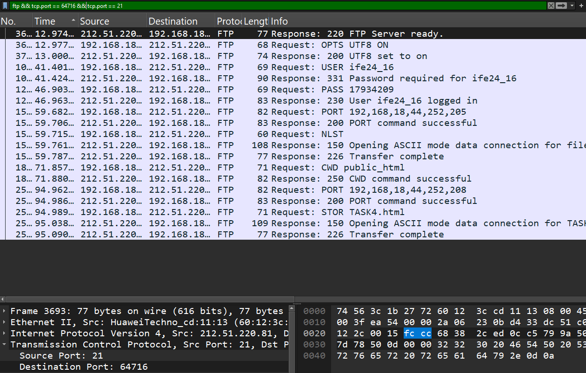
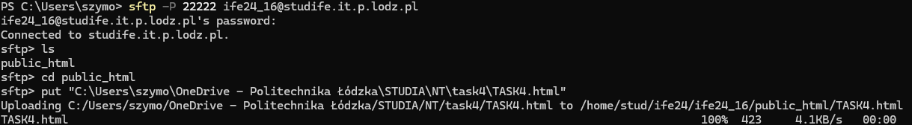

Justification for Choosing GitHub Pages
We chose GitHub Pages for hosting my project because it's a free, easy-to-use service that perfectly suits my needs. Setting it up is simple—once I push my HTML and CSS files to the repository, GitHub Pages automatically publishes them. The site is globally accessible, offering fast performance, and it includes built-in HTTPS support for secure browsing. Since my project is a static website, GitHub Pages is an ideal solution, providing a reliable and efficient hosting platform.
Theoretical Part
- TCP Protocol: TCP (Transmission Control Protocol) is a reliable, connection-oriented protocol that ensures ordered and error-checked delivery of data. It is widely used for applications requiring data integrity, such as web browsing (HTTP/HTTPS), email (SMTP/IMAP), and file transfers (FTP).
- UDP Protocol: UDP (User Datagram Protocol) is a connectionless, lightweight protocol used for applications where speed is prioritized over reliability, such as video streaming, VoIP, and gaming. Unlike TCP, it does not provide error correction or data sequencing.
-
TCP Parameters:
TCP includes several critical parameters:
- Sequence Number: Identifies the order of data packets.
- Acknowledgment Number: Confirms receipt of data packets.
- Window Size: Specifies the amount of data that can be sent without acknowledgment.
- Checksum: Ensures data integrity during transmission.
-
UDP Parameters:
UDP has minimal parameters:
- Source Port: Identifies the sender's port.
- Destination Port: Identifies the receiver's port.
- Length: Specifies the total packet size.
- Checksum: Provides basic error detection.
-
TCP Connection:
TCP uses a three-way handshake for connection establishment:
- SYN: The client sends a SYN (synchronize) packet to initiate a connection.
- SYN-ACK: The server responds with a SYN-ACK (synchronize-acknowledge) packet.
- ACK: The client sends an ACK (acknowledge) packet, completing the handshake.
-
Ports:
Ports are logical endpoints used to differentiate between multiple communication streams on a single device. Common examples include:
- Port 80: HTTP traffic.
- Port 443: HTTPS traffic.
- Port 21: FTP control commands.
- Port 53: DNS queries.
Practical Part
-
Accessing Google:
Use
netstatand Wireshark to identify the local and remote ports used for communication withwww.google.com.- Record of the observed port numbers and their states.
-
File Transfer with FTP:
Transfer a file to the
studife.it.p.lodz.plserver using FTP.Analyze the traffic usingnetstatand Wireshark to identify active ports. -
File Transfer with SFTP/SCP:
Transfer a file using SFTP or SCP to the server.
Identify the protocol and port used.
-
DNS Protocol:
Use Wireshark to monitor DNS queries and determine the transport protocol (usually UDP) and port (53) used.
- Provide an analysis of the captured traffic.